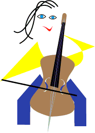

Larry Wright
lwright@rice.edu
Hotlist
WIRED Magazine's Rest Stop on the Infobahn
InterNIC's Pick of Top General Purpose Web Sites
MULTIMEDIA
GNN Home Page
Cica Win3 Archives
Cakewalk Home Page
Portland Web Map
Microsoft Corporation World-Wide-Web Server
Turtle Beach Users Group Home Page
Home Page for Teleport
RAINet Home Page
RainDrop Laboratories
The Galileo Project Home Page
Musician
Cello, Keyboards, MIDI compostion and electronic instrument programming.
Copyright 1994 Larry Wright